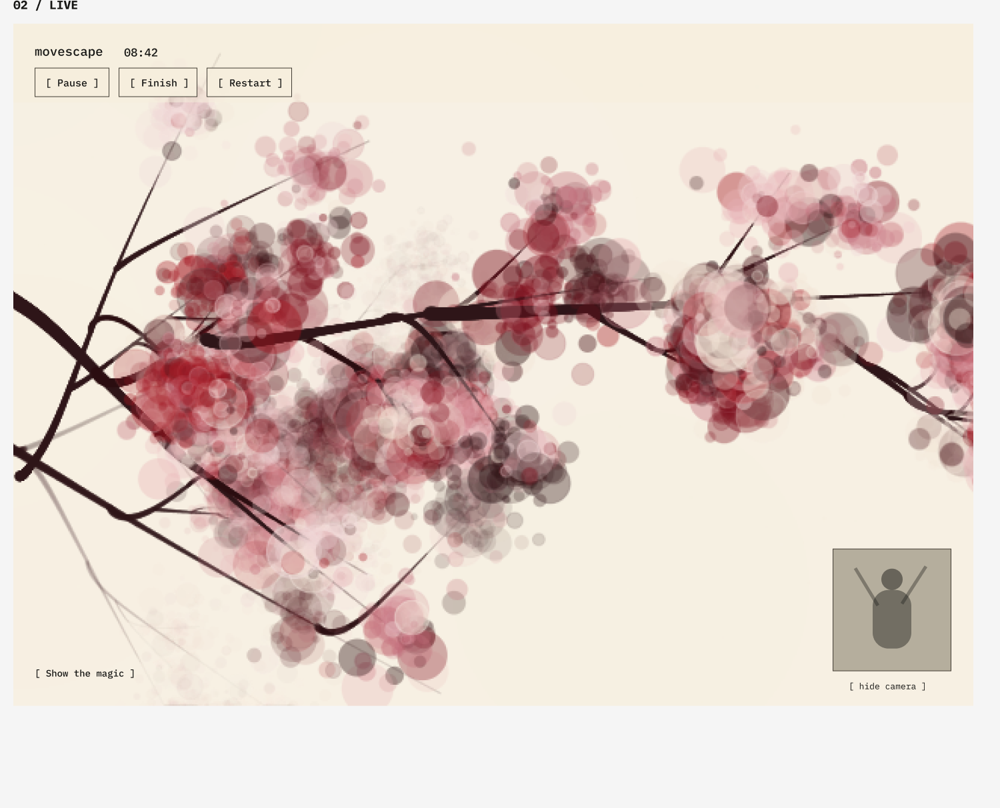
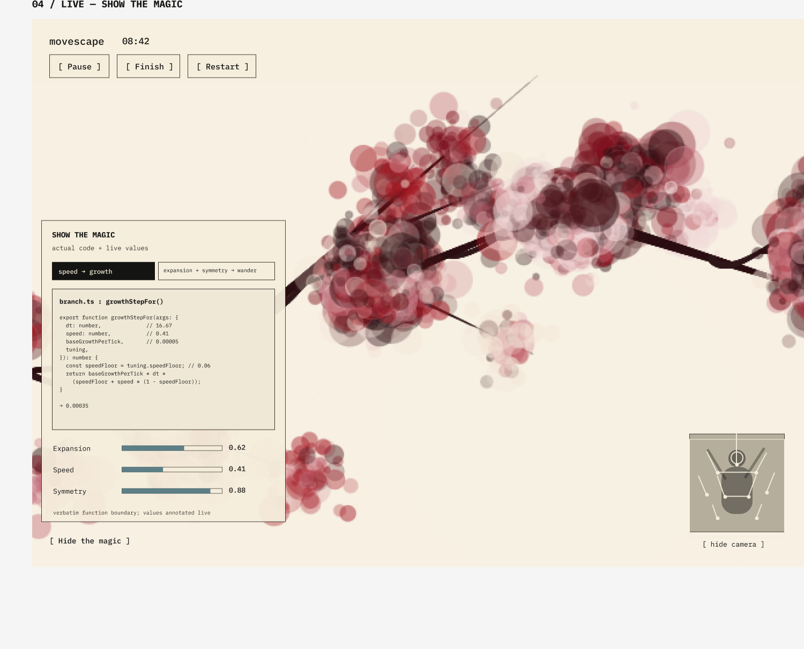

MoveScape: art made from how you move
- Problem
- People who don't naturally enjoy exercise lack a reason to move. Every mainstream fitness-motivation tool (streaks, badges, leaderboards) is generic, judgmental, and disposable.
- What I made
- A browser app that watches how you move through your webcam and turns three qualities of your movement (openness, speed, symmetry) into a deterministic, seeded generative artwork that grows in real time as you move.
- Where it is
- In progress. Milestones M0 through M5 are built and merged: capture, the seed system, the engine, the first art style, sessions and saving. Not deployed publicly yet.
Philosophy
MoveScape is an art-making instrument first. Fitness is one use case, and it was the founding one, but it isn't the product's identity: dance, yoga, somatic practice, and plain creative play count exactly as much. That framing removes the "I should exercise" burden from the product's front door and opens it to anyone interested in movement or art, whether or not they think of themselves as someone who exercises.
The math is the point, not a mechanism hidden behind the art. Every piece is deterministic from a seed: style, your choices, the seed, and your recorded movement together fully describe it, and that recipe can reconstruct the piece exactly, at any resolution, forever. Because the seed is yours and the movement is a performance only you gave in that moment, no one else will ever produce that exact piece. A finished session isn't decoration; it's something that specifically belongs to you.
That determinism sits inside a real generative-art lineage, not just an engineering choice. Vera Molnár built her practice the same way in the 1960s: set the initial conditions, let a rule-following system produce the variation, and the same seed always yields the same composition, the same convention platforms like fxhash and artists like Tyler Hobbs use today. Surfacing that, rather than treating it as plumbing to hide, is a deliberate choice.
"Show the magic" comes from a related tradition: algorave and live-coding performance (Sam Aaron's Sonic Pi, Alex McLean's TidalCycles), where performers project their own screens while writing the code that's making the music, live, under the scene's own mantra, "show us your screens." TOPLAP, its manifesto group, puts it directly: algorithms are thoughts, and thoughts should be visible. Visible mechanism isn't a debug panel bolted onto MoveScape. It's the same conviction, applied to movement instead of code.
The problem and the spec
The idea started as a fitness-motivation problem: gamified rewards are generic, judgmental about missed days, and lose all meaning once earned. MoveScape answers it differently: the art is made of the movement itself, so the reward keeps its value, and the psychological burden of "I should exercise" never has to show up at the door.
The hardest scoping call was who v1 is for: one person, by name, matching the target psychology exactly. Keeping the audience that narrow kept the spec honest about what v1 actually needs to prove, instead of building for a hypothetical audience of strangers before the experience was validated for one real user.
| ID | Requirement | Priority |
|---|---|---|
| R1 | Live canvas driven by webcam pose tracking: expansion, speed and symmetry visibly shape the art within a frame or two of moving | Must |
| R2 | A seed system producing deterministic, reconstructable worlds end to end: the piece most other decisions had to protect, since retrofitting determinism later would mean a rewrite | Must |
| R3 | Accounts, cloud sync, and a browsable gallery | Later |
Three of the decisions from the v1 scope. The full spec stays private for now.
Design
The interface went through a full Double Diamond process (discover, define, develop, deliver), landing on a system I call "Typewriter Utility": the artwork supplies all color, the UI supplies none. Every button and label renders in one ink color on the canvas's own paper tone, and the canvas itself is the page: full-bleed, edge to edge. The Define phase settled the actual problem it's solving: MoveScape has no gallery room or attendant to build trust the way a physical installation does, so the page alone has to decide, on purpose, how visibly it shows the mechanism turning movement into art, and how a session begins, sustains itself, and ends.
One decision changed after real critique. Discard was first going to be small, quiet, and text-only, to lower the odds of an accidental click. That got rejected as a dark pattern: the product already refuses to rank effort (a hard workout and a gentle one make equally valid art), so visually diminishing the choice to discard a piece would contradict that principle at the UI level. Discard ended up the same size and weight as Save and Keep moving; misclick protection comes from spacing and order, not from making one option look less important.
"Show the magic" answers a related question: how do you prove the art is really following you, not just decorating your session? The honesty bar I set for it: someone who reads code should be able to watch the panel and verify what's actually running, not trust a summary of it. So it shows the real function driving the growth on screen, verbatim, with that tick's live argument values annotated inline, not a paraphrased formula.


Left: mid-session, the canvas full-bleed behind the minimal control chrome. Right: "Show the magic" open, showing the live function and values actually producing the branch on screen.
Technical design
The architecture's one hard rule: everything generative is deterministic from a seed. A finished piece is fully described by a tiny recipe (style, choices, seed, and the recorded movement) and can be perfectly reconstructed from it, at any resolution, forever. That single requirement shaped almost everything else: a fixed-timestep simulation driven by the recording's own clock rather than wall time, sample-and-hold playback pinned by a versioned recipe format, and a hard ban on unseeded randomness anywhere in the world or rendering layers.
That recipe is the actual saved artifact: a JSON file logging the seed, the choices, and the session's movement, and it's 10 to 100 times smaller than a high-resolution image of the same piece. It's also what a future gallery gets built on. Instead of storing an ever-growing library of full-resolution images, the gallery can store recipes and regenerate the art on demand, so it scales without the storage cost climbing the way image storage would, and without ever losing quality on download, since each piece reconstructs at whatever resolution is asked for rather than the one it happened to be exported at originally. The tradeoff is compute, not storage: opening an old piece means replaying its recording, not just decoding an image.
All three layers run in the browser. There is no backend; only the static assets and the pose model are ever fetched over the network.
Keeping pose tracking accurate off-screen
| Option | Why it was attractive | Why I didn't pick it |
|---|---|---|
| Pin video and canvas together in the viewport | Simple, and already proven to work in an earlier proof of concept | Ties tracking quality to DOM visibility: browsers throttle frame delivery to video elements that scroll off-screen, which rules out a full-bleed canvas and any future mobile layout |
| Decouple capture from layout, chosen | Tracking quality stays constant no matter what's on screen, which is what makes full-bleed (and eventually mobile) possible at all | More moving parts: pose inference runs in a Web Worker with a feature-detection fallback path that has to behave identically to the primary one |
Stack: TypeScript, Vite, MediaPipe Tasks (PoseLandmarker), Web Workers, Canvas 2D, IndexedDB, Vitest, ESLint, GitHub Actions.
Building and launching
I built this with AI coding agents doing the implementation. A coordinator agent breaks each milestone into tasks, assigns them to builder agents, checks their work against acceptance criteria and a fixed list of invariants, and updates a running handoff log. Each milestone gets its own branch and PR, merged only after I've tested it live, with CI running lint, typecheck, tests, and a build on every push.
The best example of what went wrong, and what I changed because of it: marks in a piece would fade out, then sometimes come back after a burst of movement. I spent several sessions chasing paint-order bugs in the compositor, each one a real bug, each fix feeling like progress, which is exactly what kept me looking in the wrong place. The actual cause was a Canvas2D alpha state leak: a low-opacity element drawn last left the canvas's global opacity set, so an entire layer could composite at 4%. The clue had been there from day one (marks coming back can't be explained by pixels getting permanently overwritten), and the bug took under 40 minutes to find once I built a detector for the actual symptom, content vanishing between frames, after about five hours comparing renders against a reference.
What changed afterward: the first tool for a visible bug is now an automated detector of that symptom, not a guess. Every hypothesis has to explain every observed symptom before a fix ships. And any rendering pass that touches shared canvas state has to restore it, backed by a regression test.
Looking back
The spec's two-tier structure (one document for what the system should be, a separate running log for where the build actually stands) has held up better than I expected; deviations get written down with their reasoning instead of silently drifting from the plan. What I'd revisit: the "seed world" idea felt right on paper and is now genuinely up for debate once real movement got mapped onto it. Some decisions only test themselves once you're standing in front of the thing.